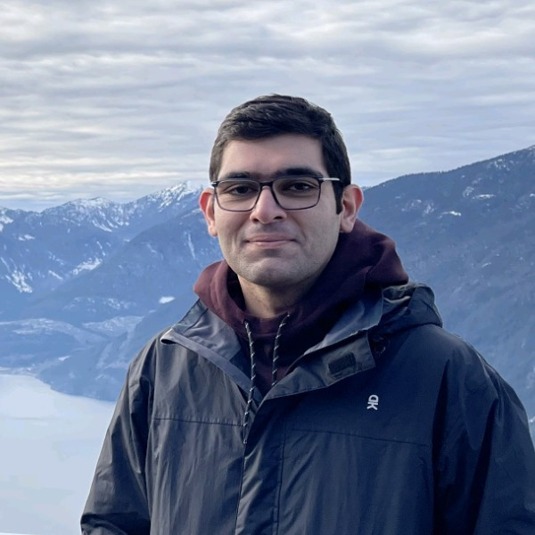
Amir Mehdi Soufi
I am an AI and Robotics researcher with a Ph.D. in Mechanical Engineering - Robotics, specializing in reinforcement learning, generative models, and intelligent control for autonomous systems. My work spans RL pipelines, motion planning, digital twins, robot manipulation, and industrial automation. I am interested in AI-assisted control, navigation, and perception for autonomous platforms.
Selected Publications
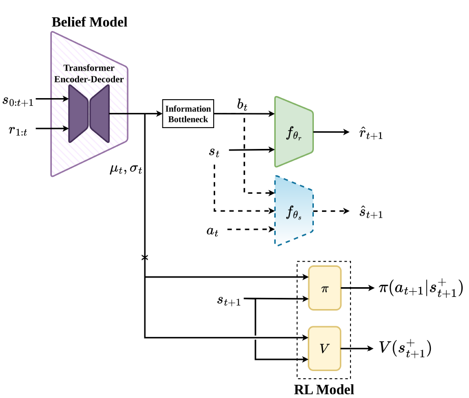
Context Representation via Action-Free Transformer Encoder-Decoder for Meta Reinforcement Learning
A. M. S. Enayati, H. Honari, K. Gupta, and H. Najjaran.
arXiv preprint
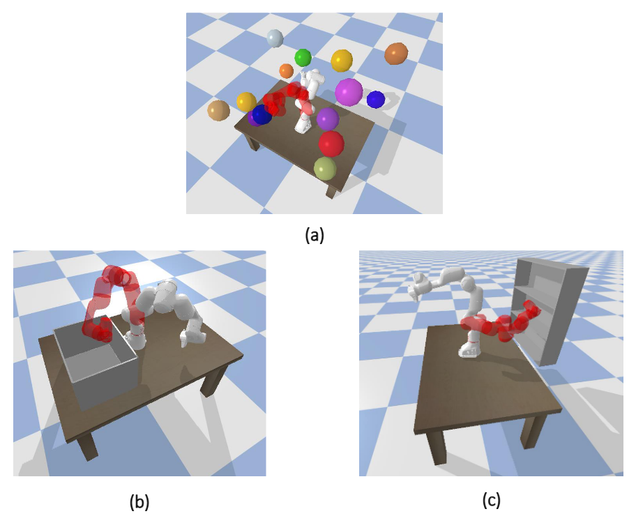
A Cross-Environment and Cross-Embodiment Path Planning Framework via a Conditional Diffusion Model
M. G. Tamizi, H. Honari, A. M. S. Enayati, A. Nozdryn-Plotnicki, and H. Najjaran.
arXiv preprint
Hit Expansion via Localized Exploration of Synthesizable Chemical Space
Y. Jin, W. Virany, A. Lian, A. M. S. Enayati, P. Gaiński, and M. Koziarski
ICLR 2026 Workshop on Generative and Experimental Perspectives for Biomolecular Design
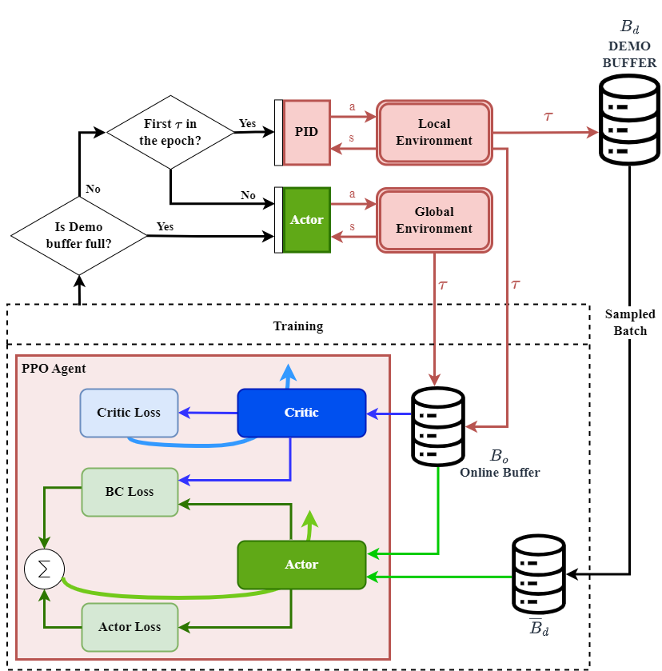
Sample-Efficient Reinforcement Learning with Symmetry-Guided Demonstrations for Robotic Manipulation
A. M. S. Enayati, Z. Zhang, K. Gupta, and H. Najjaran.
Springer Neural Computing & Applications
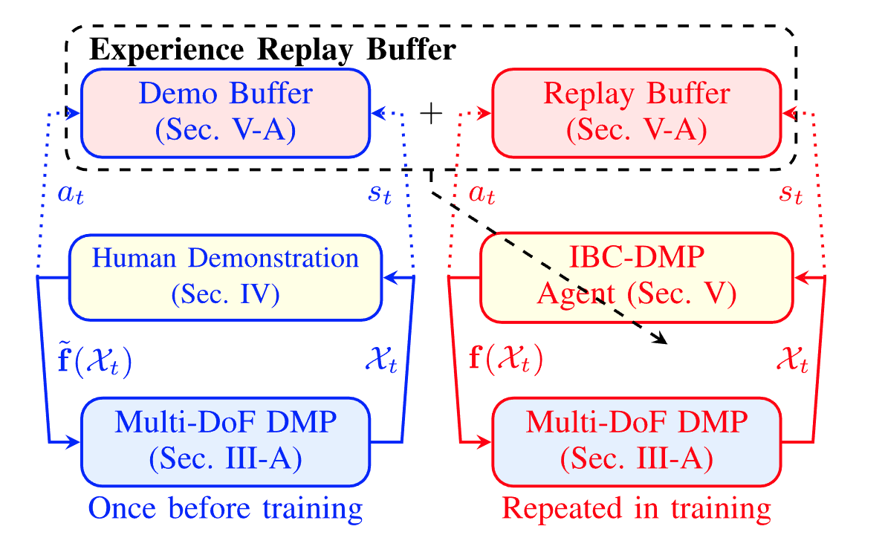
Using Implicit Behavior Cloning and DMP for Robot Motion Planning
Z. Zhang, J. Hong, A. M. S. Enayati, and H. Najjaran.
IEEE Transactions on Robotics
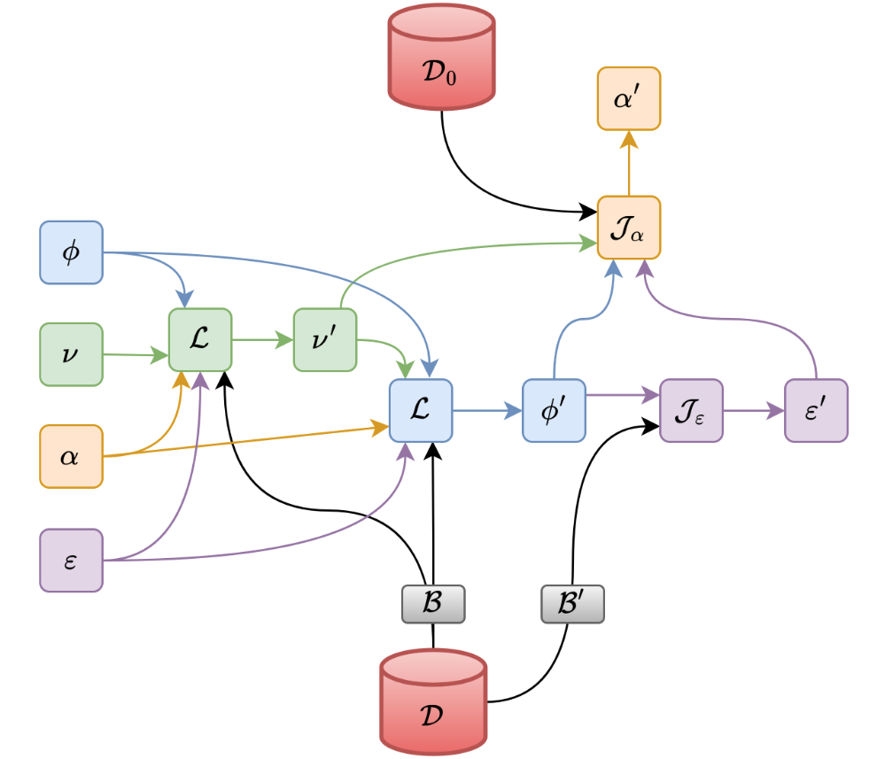
Meta SAC-Lag: Towards Deployable Safe Reinforcement Learning
H. Honari, A. M. S. Enayati, M. G. Tamizi, and H. Najjaran.
IEEE IROS 2024
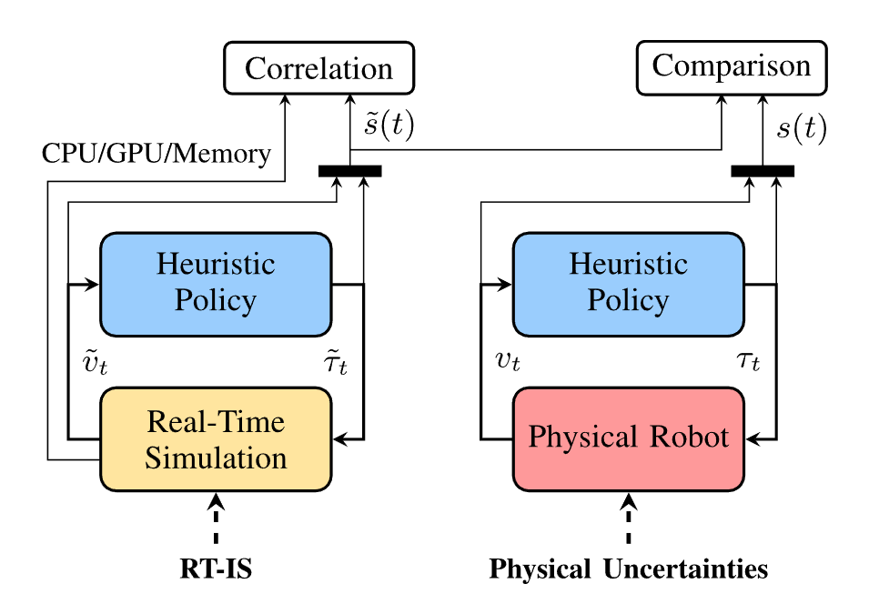
Facilitating Sim-to-Real via Intrinsic Stochasticity
A. M. S. Enayati, R. Dershan, Z. Zhang, D. Richert, and H. Najjaran.
IEEE Transactions on AI
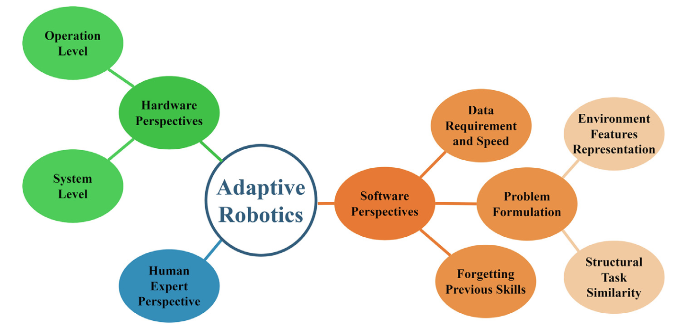
A Methodical Interpretation of Adaptive Robotics
A. M. S. Enayati, Z. Zhang, H. Najjaran.
Neurocomputing, 2022
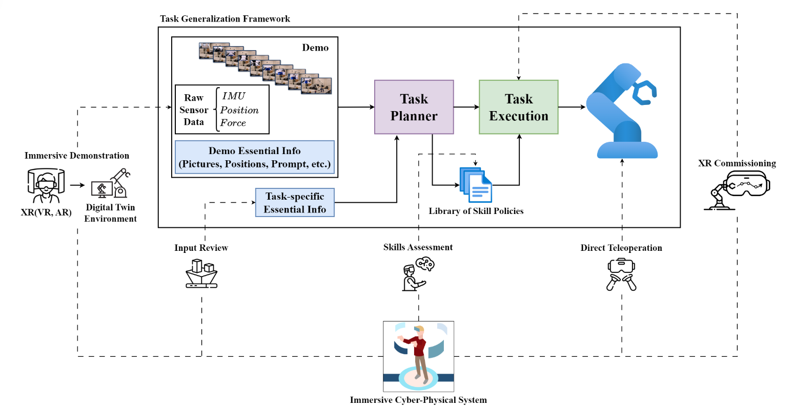
Extended Reality for Enhanced Human-Robot Collaboration
Y. Karpichev, T. Charter, J. Hong, A. M. S. Enayati, H. Honari, M. G. Tamizi, and H. Najjaran.
IEEE ROMAN 2024
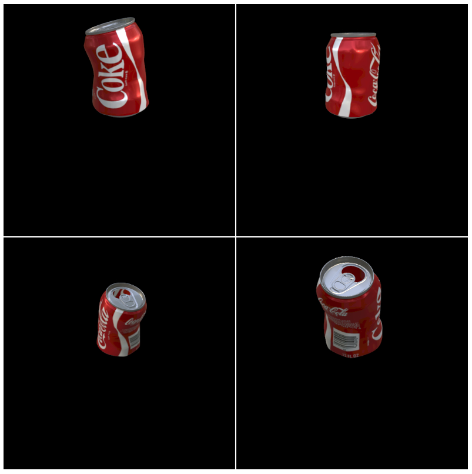
Visual Deformation Detection Using Soft Simulation
J. Sol, A. M. S. Enayati, and H. Najjaran.
IEEE CASE 2024
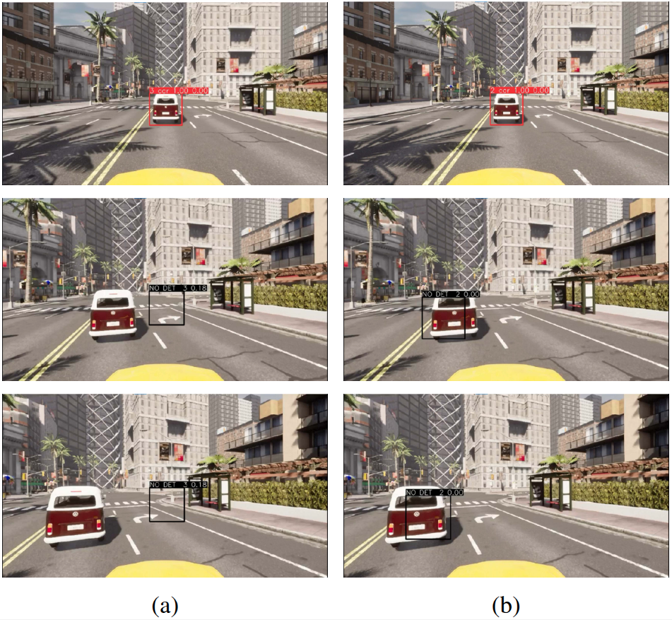
Ego-Motion Aware Target Prediction for Multi-Object Tracking
N. Mahdian, M. Jani, A. M. S. Enayati, and H. Najjaran.
arXiv
Patents
- M. Durali, M. H. Heydari, A. M. S. Enayati, S. M. Hosseini. Testing mechanical overspeed protection systems, US Patent No. 2024/0003264 A1, 2024.
- M. Durali, M. A. Soleimani, F. F. Shabani, A. Habibollahi, A. Sohbatloo, A. M. S. Enayati. Controlling acoustics of a performance space, US Patent No. 2019/0292774 A1, 2019.
Work Experience
Huawei Canada Research Institute — ON, Canada Jan. 2026 - Present
- Machine Learning Researcher
- Conducting machine learning research and developing high-fidelity physics-based simulations for robotic applications.
SickKids Research Institute — ON, Canada Oct. 2025 - Jan. 2026
- Postdoctoral Research Fellow @ Molecular Medicine Program
- Improved the sample efficiency of generative flow network models in drug discovery and developed an uncertainty-aware multi-fidelity surrogate model.
University of Victoria / UBC — BC, Canada Sep. 2020 - Present
- Graduate Research Assistant @ Advanced Control & Intelligent Systems Lab
- Co-Instructor & Teaching Assistant
- Delivered lectures and labs for Applied Machine Learning for Mechanical Engineering
- Assisted in Robotics, Dynamics, Control Systems, and Advanced Control courses
Durali System Design & Automation (DSDA Co.) — Tehran, Iran Mar. 2016 - Mar. 2020
- Project Lead
- 6-DOF Hydraulic Motion Simulator
Mechanical & hydraulic design, mechanism optimization, and manufacturing a scaled prototype of a heavy-payload simulator.
- Mechanical Engineer
- City Theater & Orumieh Theater Machinery
Led the mechanical design team in the automation/renovation project of Iran's largest theater. Built mechanisms and managed onsite commissioning.
- Acoustic Robotic System
DfM-focused redesign for scalable production of robotic acoustic systems.
- Mechanical Overspeed Safety Test Bench
Designed, built, and commissioned a testbench for turbine safety devices.
S. Rezaei Research Center (SRRC) — Tehran, Iran May 2015 - Dec. 2015
- Mechanical Engineering Intern
- Built an electric motorcycle as a member of an Undergrad team for the 5th Iranian Machine Design Competition — won Best Design Award
Skills
- AI & Machine Learning: Reinforcement Learning (model-free, multi-task, safe, Sim2Real), Generative Models (Transformers, Diffusion Models, VAEs, GFlowNets), Representation Learning
- Software & Tools: Python (PyTorch, Gymnasium, NumPy/SciPy), MATLAB/Simulink, Git, Bash, Docker
- Robotics & Control: Simulation (PyBullet, Simscape, MuJoCo), Manipulation (path planning, kinematics/dynamics), Robust/Adaptive Control
- Mechanical & Manufacturing: CAD (SolidWorks, CATIA), FEA (ABAQUS), DfM/DfA, Testing & Commissioning
- Languages: English (Fluent), French (B1), Persian (Native)
Education
-
Ph.D. Mechanical Engineering, University of Victoria / University of British Columbia, BC, Canada | Sep. 2020 – Present
-
M.Sc. Mechanical Engineering – Control Systems, Sharif University of Technology, Tehran, Iran | Sep. 2016 – Aug. 2018
-
B.Sc. Mechanical Engineering, Sharif University of Technology, Tehran, Iran | Sep. 2012 – Aug. 2016